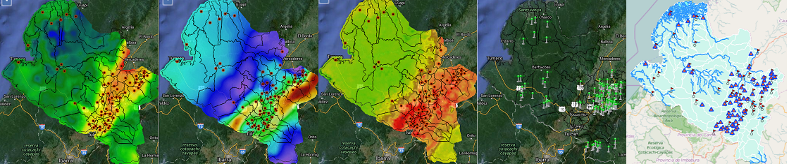

Los mapas energéticos representan un registro histórico de cada una de las fuentes
energéticas, este registro es un promedio mensual y anual de 14 años de
información representada en un diagrama de lineas que permite observas el comportamiento
de los recursos en el tiempo, para los datos de viento se presesnta adicionalemente un promedio de horas
para velocodad de viento y los diagramas de rosa de los vientos y curba de weibull con datos de los
ultimos 5 años. En el caso del potencial hídrico se presenta la información del caudal de
las microcuencas pertenecientes al departamento, información de estaciones del IDEAM
escenciales para el estudio del potencial hídrico.
Geoalternar
Es una plataforma que permite visualizar el resultado de la Investigación para el estudio de fuentes
alternativas existentes en el departamento de Nariño, realizada en apoyo a la primera fase del
proyecto "ALTERNAR - Análisis de Oportunidades Energéticas con Fuentes
Alternativas en el Departamento de Nariño" .
GEOAlternar permite visualizar mapas energén;ticos y obtener datos sobre las variación en el tiempo de fuentes de energía solar, eólica, biomasa e hídrica.
GEOAlternar permite visualizar mapas energén;ticos y obtener datos sobre las variación en el tiempo de fuentes de energía solar, eólica, biomasa e hídrica.